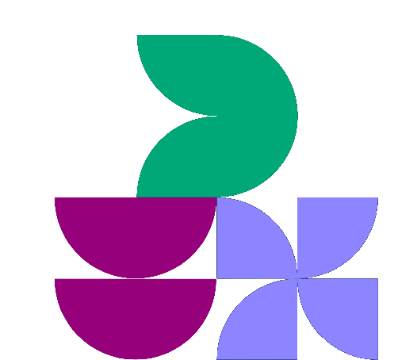

CY
ConnectYourHealth
InFood = Output

-
Balans vandaag
0
kcal ingenomen − verbrand
Training
Nog niet opgehaald voor deze dag.
Herstel
❤️ Rusthartslag
—
week gem. —
💓 HRV
—
week gem. —
😴 Slaap
—
week gem. —
⚖️ Gewicht
—
week gem. —
Macro's
Totaal kcal ingenomen0
Dagscore
—
automatisch: balans + herstel + trainingsinspanning
Tip
🏃 Trainingstip
Maaltijden
Nog geen maaltijden ingevoerd voor deze dag.
Trend
Nog niet genoeg data om een trend te tonen.
Snel toevoegen
Ontbijt ▾
🥣🍌🍶 Havermout+banaan+kwark shake
havermout, kwark en aantal bananen aanpasbaar
g
ml
🍌
🥣🍌 Havermout banaan shake
zonder kwark · havermout en aantal bananen aanpasbaar
g
🍌
🥣🍶 Havermout + magere kwark
havermout en kwark aanpasbaar
g
ml
🥚 Gekookte eieren
~78 kcal per ei
stuks
🫐 Blauwe bessen
~57 kcal per 100g · aantal gram aanpasbaar
g
🍶 Magere kwark
~45 kcal per 100ml · aantal ml aanpasbaar
ml
Lunch ▾
🥪 Broodje kipfilet
volkoren broodje ~120 kcal · plakje kipfilet ~20 kcal · aantal van elk apart instelbaar
broodjes
plakjes
🥚 Gekookte eieren
~78 kcal per ei
stuks
Snack ▾
🍌 Banaan
1 middelgrote banaan · ~105 kcal
🍎 Appel
1 middelgrote appel · ~95 kcal
🍬 Winegum
~15 kcal per stuk
stuks
Diner ▾
🍝 Macaroni met kipfilet en groenten
saus/pasta/groenten vast (752 kcal, 143g koolh., 33g eiwit, 4g vet per portie) · alleen kipfilet aanpasbaar, onthoudt laatst ingevoerde aantal gram
g kip
🍗 Kipfilet (gebakken)
~165 kcal, 31g eiwit per 100g gegaard · aantal gram aanpasbaar
g
Drinken ▾
🥤 Eiwitshake
1 scoop whey (~30g) met water · ~120 kcal
🍺 Leffe Blond 0.0
alcoholvrij · ~0,26 kcal/ml · aantal ml aanpasbaar
ml
Foto van je maaltijd
Klik om een foto te kiezen — ik schat de voeding in
g
Klopt de door AI geschatte hoeveelheid niet? Pas 'm aan en de kcal/macro's hierboven én de al opgeslagen maaltijd worden verhoudingsgewijs herberekend.
Maaltijd invoeren
De ingevulde kcal/macro's hierboven worden gezien als het TOTAAL (bijv. de hele pan) en gedeeld door dit aantal.
Deze week
| Dag | ⚖️ Gewicht | ❤️ Rusthartslag | 💓 HRV | 😴 Slaap | Kcal in | Eiwit | Vet | Verbrand | Balans | Score |
|---|
Deze maand
| Dag | ⚖️ Gewicht | ❤️ Rusthartslag | 💓 HRV | 😴 Slaap | Kcal in | Eiwit | Vet | Verbrand | Balans | Score |
|---|
Per dag
| Datum | Maaltijden | Kcal in | Kcal verbrand | Balans |
|---|
Het teambord toont alleen data die automatisch via Tredict binnenkomt (training, HRV, rust-HR, slaap) — geen voeding, kcal-inname of balans, want die vul je zelf handmatig in en horen niet gedeeld te worden. Bij de week-, maand- en kwartaaloverzichten: dagscore/HRV/rust-HR/slaap zijn gemiddelden per dag, km per sport is een opgeteld totaal over de periode.
Vul hier je naam in
Deze naam wordt gebruikt op het gedeelde teambord hieronder. Je automatisch opgehaalde Tredict-data (afstand, dagscore, HRV, hartslag, slaap) wordt vanaf dat moment zichtbaar voor collega's die dit dashboard ook gebruiken — je maaltijden, kcal-inname en overige persoonlijke gegevens blijven privé.
Nieuw hier? Vul dit eenmalig in — nodig om je kcal-verbruik (rustverbranding) correct te berekenen. Hierna hoef je dit niet meer aan te passen.
Tredict nog niet gekoppeld
Ontbreken er dagen op het teambord terwijl ze wel bij jou (Week/Geschiedenis) staan? Zet dan alsnog al je lokaal opgeslagen dagen van vorige maand en deze maand door naar het teambord:
Teambord — vandaag
| Naam | Dagscore | 🏃 km | 🚴 km | 🏊 km | 🏋️ tijd | 💓 HRV | ❤️ Rust-HR |
|---|---|---|---|---|---|---|---|
| Nog geen teamdata voor vandaag. | |||||||
Bijgewerkt zodra iemand het dashboard opent met een ingevulde teamnaam.
Teambord — deze week
| Naam | Dagen | Dagscore | 🏃 km | 🚴 km | 🏊 km | 🏋️ tijd | 💓 HRV | ❤️ Rust-HR |
|---|---|---|---|---|---|---|---|---|
| Nog geen teamdata deze week. | ||||||||
Teambord — vorige week
| Naam | Dagen | Dagscore | 🏃 km | 🚴 km | 🏊 km | 🏋️ tijd | 💓 HRV | ❤️ Rust-HR |
|---|---|---|---|---|---|---|---|---|
| Nog geen teamdata voor vorige week. | ||||||||
Teambord — deze maand
| Naam | Dagen | Dagscore | 🏃 km | 🚴 km | 🏊 km | 🏋️ tijd | 💓 HRV | ❤️ Rust-HR |
|---|---|---|---|---|---|---|---|---|
| Nog geen teamdata deze maand. | ||||||||
Teambord — vorige maand
| Naam | Dagen | Dagscore | 🏃 km | 🚴 km | 🏊 km | 🏋️ tijd | 💓 HRV | ❤️ Rust-HR |
|---|---|---|---|---|---|---|---|---|
| Nog geen teamdata voor vorige maand. | ||||||||
Teambord — dit kwartaal
| Naam | Dagen | Dagscore | 🏃 km | 🚴 km | 🏊 km | 🏋️ tijd | 💓 HRV | ❤️ Rust-HR |
|---|---|---|---|---|---|---|---|---|
| Nog geen teamdata dit kwartaal. | ||||||||
Periode
🏆 Prestaties
Nog geen teamdata.
🏅 Records — aller tijden
Nog geen teamdata.
👥 Teamscore
Nog geen teamdata.